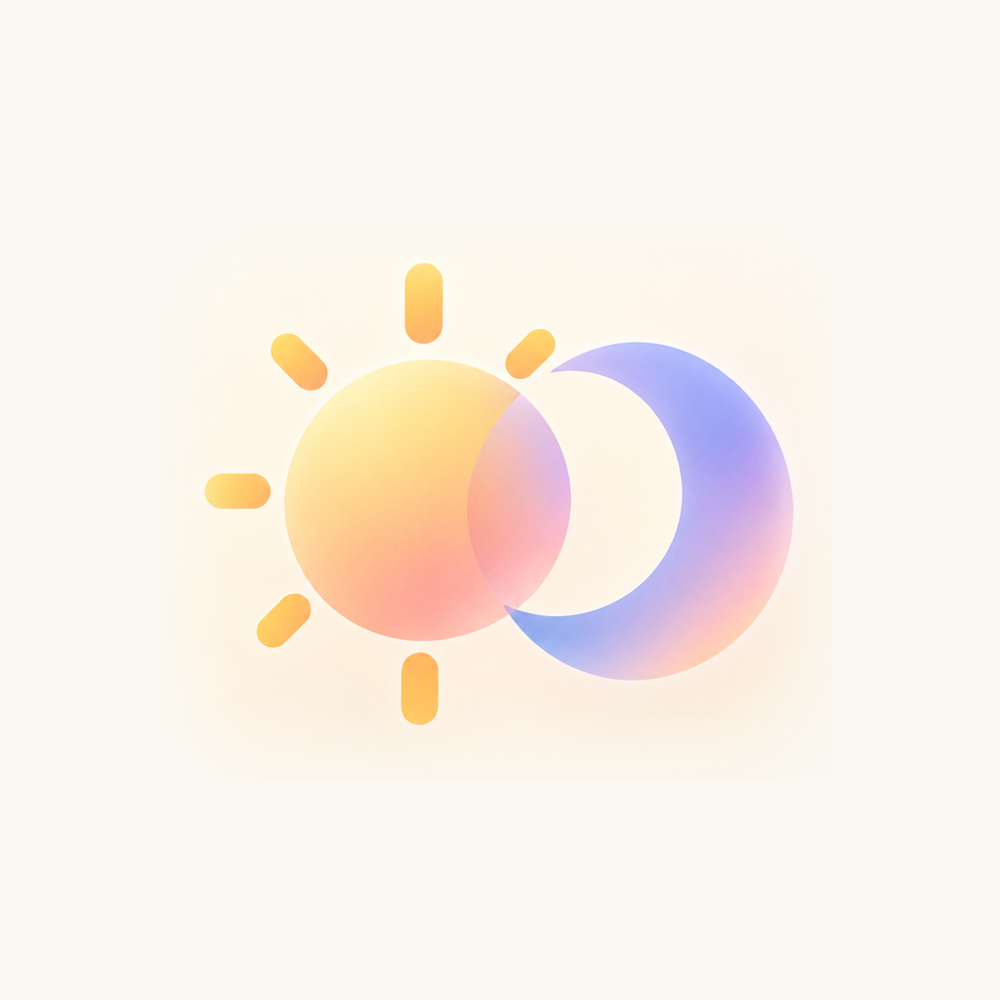
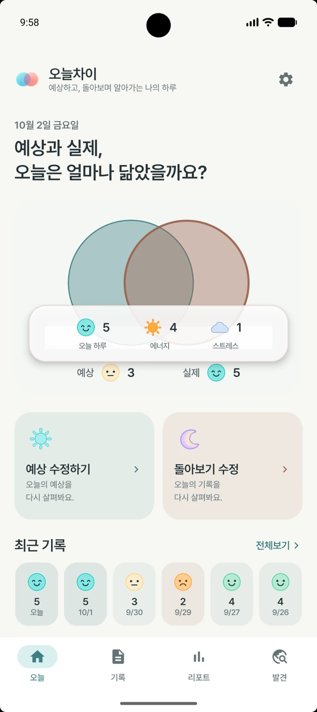
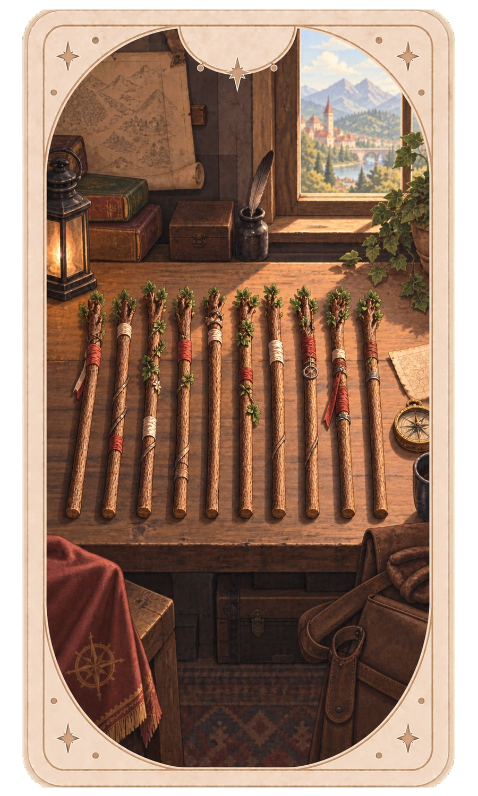
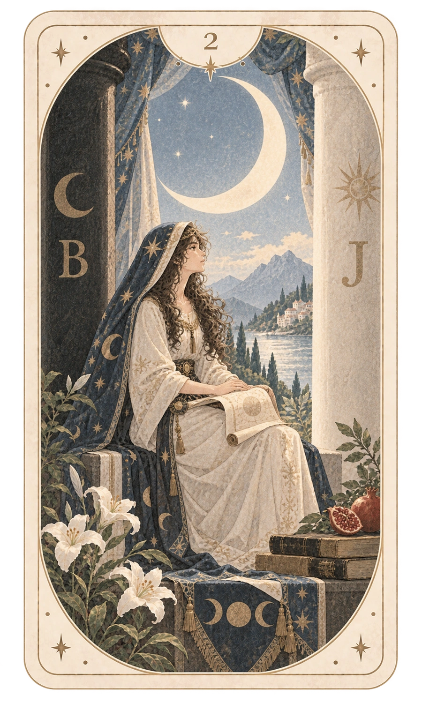
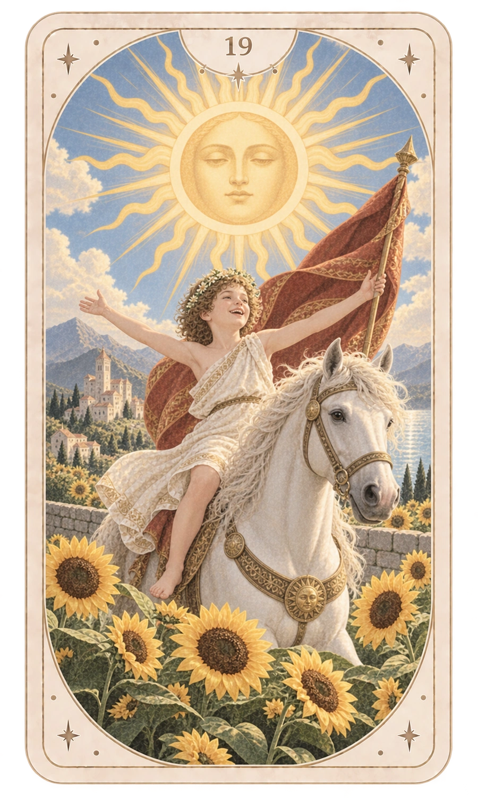

Predict
Begin today with a light touch
Choose how you expect your day, energy, and stress to feel.
Your dayHow do you think today will go?
3 / 5EnergyHow much energy do you expect to have?
2 / 5StressHow much pressure do you expect?
4 / 5
ONEULCHAI
Find your rhythm in everyday notes.Predict, reflect, and discover your day
Predict how your day might go, then reflect on it at night.
Over time, your notes reveal your own patterns.

Today · Predict and reflect
Capture the start and end of your day using the same measures. Small differences between expectations and reality become part of your story.
Predict
Choose how you expect your day, energy, and stress to feel.
Reflect
Use the same measures to record how your day really went, then add a few highlights and a short note.
History
Follow your entries in the calendar, then open any day to see your expectations, reflections, notes, and daily card.
The day felt a little lower than expected, but your energy was actually higher.
Better than expected, and I felt more energetic in the afternoon.

Reports · Your patterns
As you keep recording, patterns emerge in your expectations, real outcomes, weekday rhythm, and recurring topics.
This day had the largest gap between your predicted and actual daily ratings.
When a day goes better than expected,
it can remind you that you may not need to worry quite so much.
Predicted 5 → Actual 5 was the most common combination.
It shows the direction of the difference, not whether the day was good or bad.
Saturday had a relatively high daily rating.
Stress was often lower than the overall average.
Tap a word to explore recurring themes.
Your daily cards become part of your history. See which ones you have met most often.
Discover · Daily card
Discover your daily card. Each encounter adds another interpretation, with upright and reversed cards remembered separately.
Choose the one that draws you in. Turn it over to discover your card and a small message for today.


See how many cards you have found in each suit—and how many discoveries are still ahead.
REMINDER
Set separate reminders for your predictions and reflections, and change their times whenever you like.
Get a reminder at your chosen time if you have not recorded your day yet.
PRIVACY
Your daily notes are stored and analyzed on your device by default. External services are used only where needed.
Predictions, reflections, and card history remain on your device by default.
Your short notes and pattern calculations are analyzed locally on your device.
Google services separately process information needed for ads and purchases.
ONEULCHAI
Small daily notes become a picture of your own rhythm.